C1手动挡科目三全流程（2025版满分攻略）
C1科目三一共有16个项目，在大家的‘共同认知’中——加减档操作、直线行驶、靠边停车是科目三公认最难的三个项目。
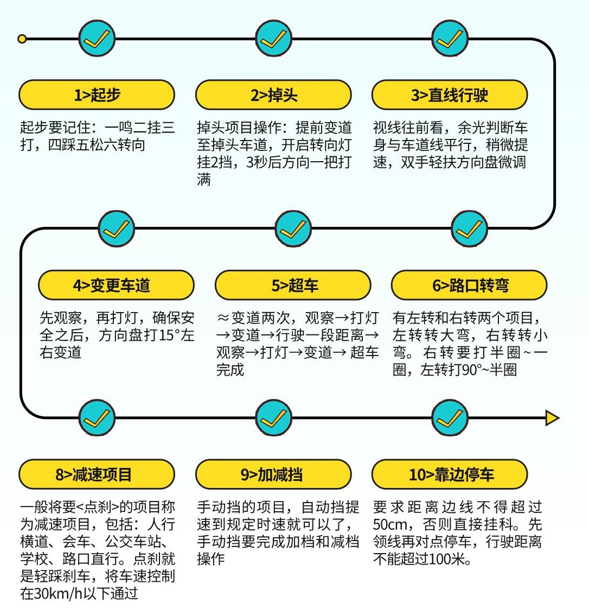
首先，科目三一定是有2次上车的操作的。
第一次就是上车然后验证身份，接着是下车完成绕车一周的操作，然后才是第二次上车调整座椅靠背这些。
所以，如果你考科目三的时候才第一次上车，千万不要急着去调整座椅这些，要记得还有绕车一周。
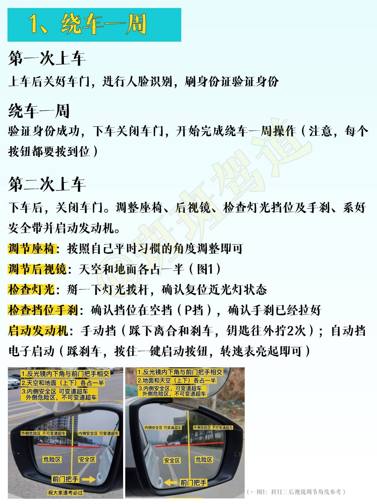
正常启动车辆之后，就要开始准备做模拟灯光了。
因为模拟灯光只要做错了一项灯光，就会直接挂科，所以第二次上车检查仪表盘和灯光的细节非常重要。
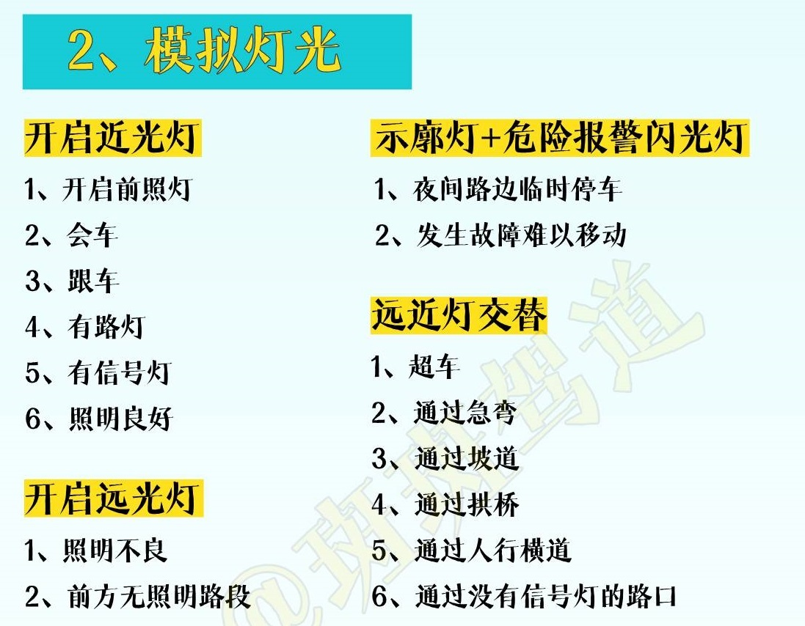
模拟灯光完成之后，就要开始按照步骤起步了，起步的半联动以及起步后轻点油门加速换二挡要确保在50米内完成。
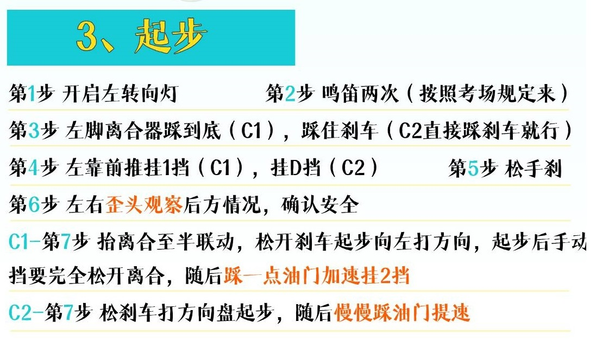
路口的行为有四种——掉头、左转弯、右转弯和直行。
前三项，要记得的细节是：打转向灯。左右转弯要记得口诀，左转转大弯，右转转小弯，相对应的，方向盘左转要打少一点，而右转则打多一点。
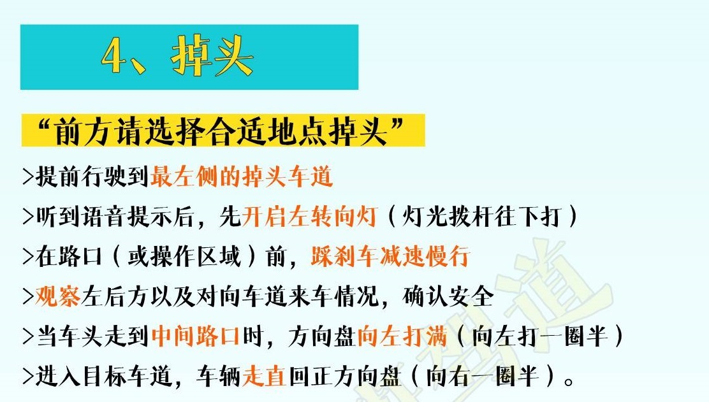
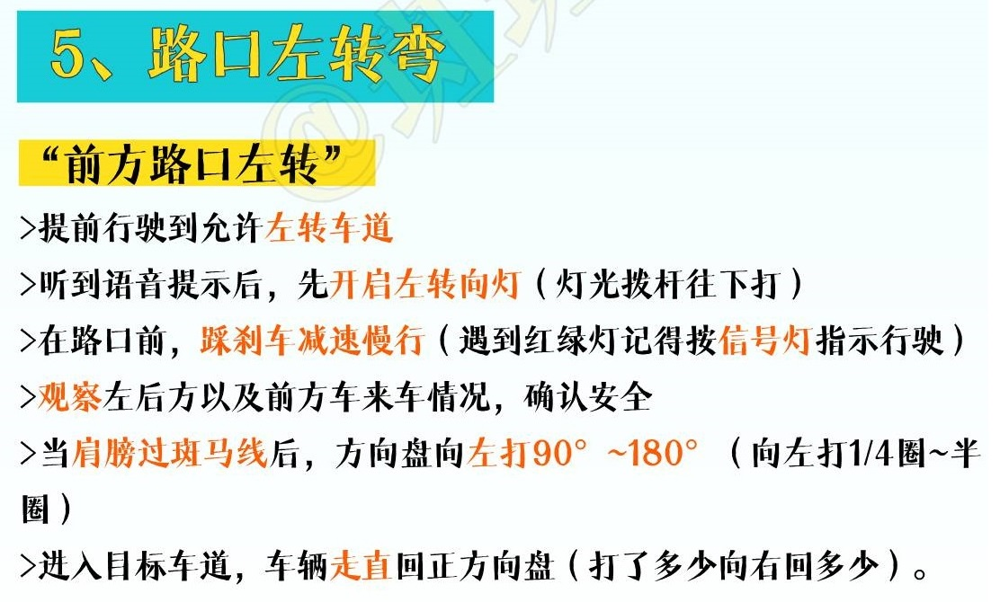
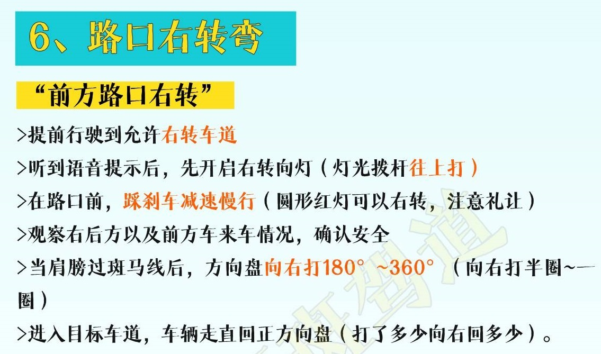
直行就很简单了，在兼顾红绿灯的情况下，减速通过就可以了（记得要做点刹的动作，但是不能踩太多，否则容易导致档速不匹配，也不用踩刹车）。
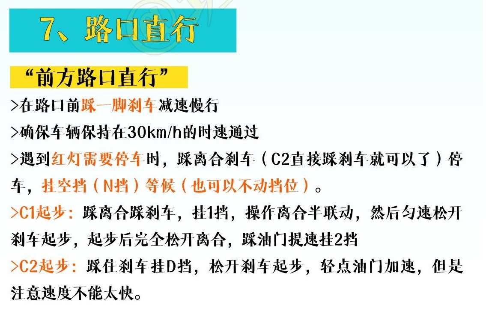
接着就是最难的加减挡了，很多考场都是没有语音播报，然后选择合适路段完成操作，全程要求要在次高档上保持3秒以上才算完成这个项目。
操作的时候，余光盯着时速和转速表就可以了。
记住做这个项目的时候，不能出现——猛加速或者猛踩刹车的情况（除非有什么特殊情况）
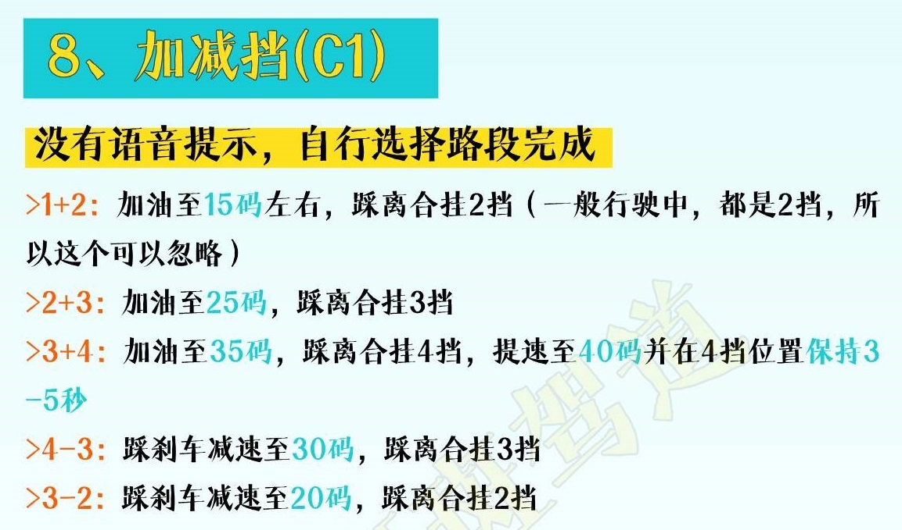
直线行驶，这个在掌握技巧的时候，车感也很重要。有几个关键点
确保自己是保持放松的状态，不能紧握方向盘，也不能方向盘一直摆动
不能一直盯着车头走，这样车很容易歪掉。
确保车辆匀速行驶就可以了，这样就不用关注档速这些问题。
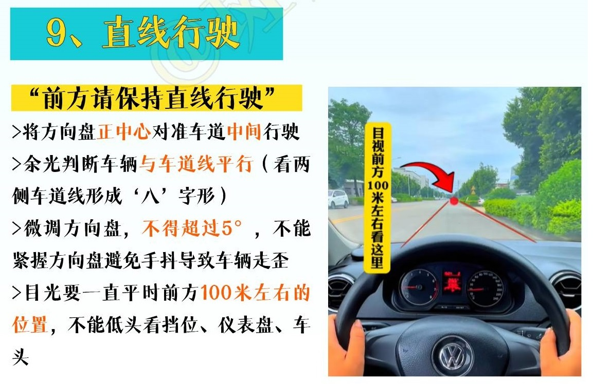
变道和超车，其实他们的操作非常相似的。
变道是一次变道，而超车可以理解为两次变道，只要记住方向盘不能一下子猛打，然后记得打转向灯就可以了。
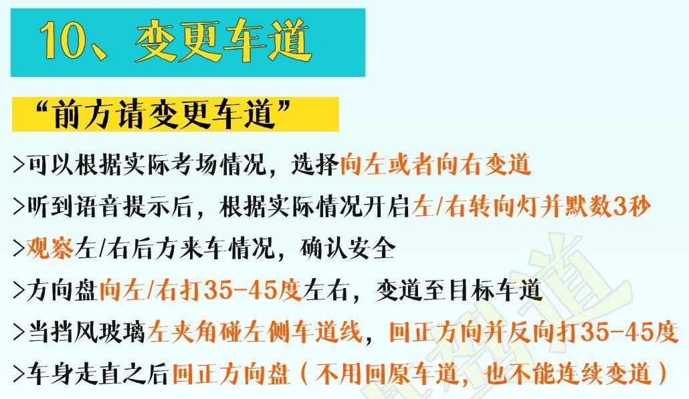
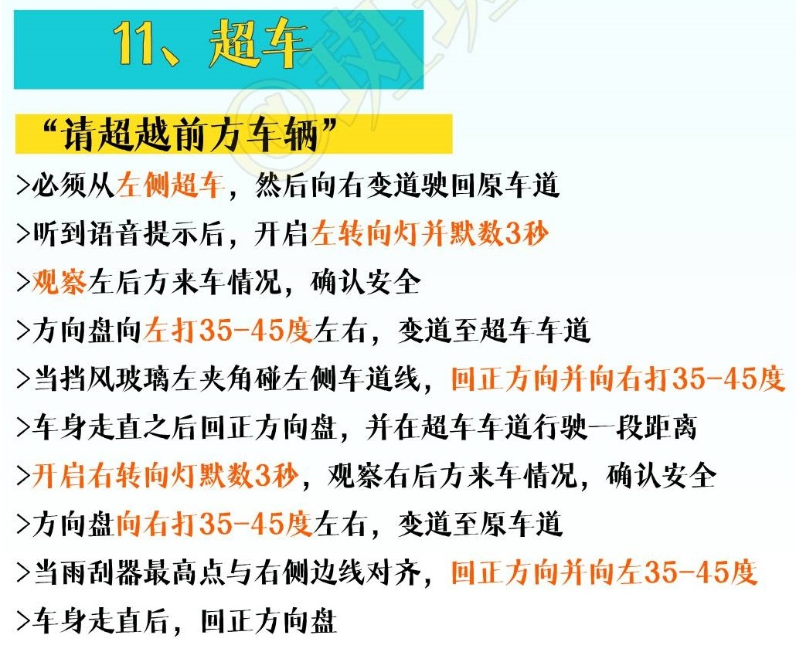
减速项目，很简单，这个不用再提。
记住自己考场的对应项目位置就没有什么问题了。
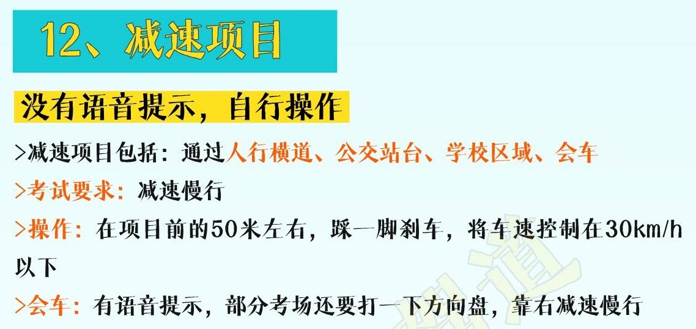
最后是靠边停车，其实难点就是一个——没有办法找到30cm的位置。
因为车辆不同，所以找30cm的点位并不是一成不变的。
最常见的方法：雨刮器对线，方向盘对道路中间靠右侧，后视镜观察车身与边线一指距离。
这三个方法都有一个基本前提——确保车身是与车道线平行的。
然后在微调的时候，一次只能打30度左右（最多）打完完后立刻回正继而往左打30度拉直车身。
还不知道怎么微调的，一定要多练，这个真的很重要。
最后，只要确保车辆不要大于50cm（后视镜中，车身与编剧两指距离），其实没必要非要追求很标准的30cm，否则很容易压线。
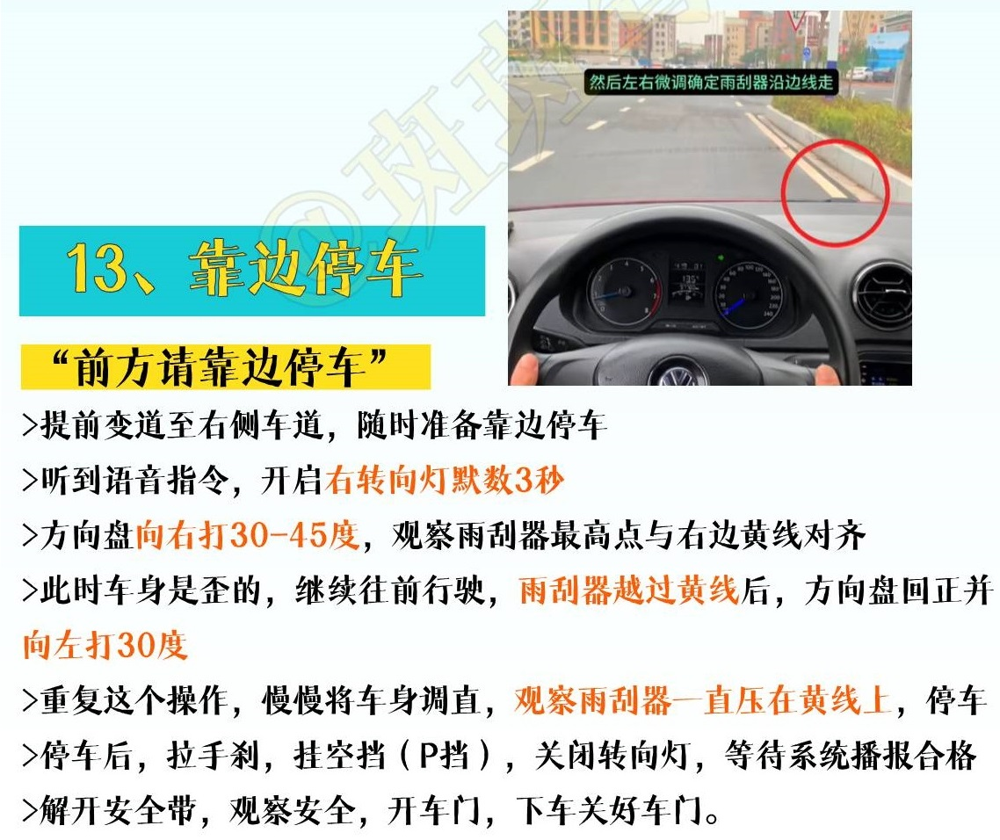
所以，其实科目三只要掌握了几个难点，剩下的都是很简单的，熟练操作就没有问题啦。
END